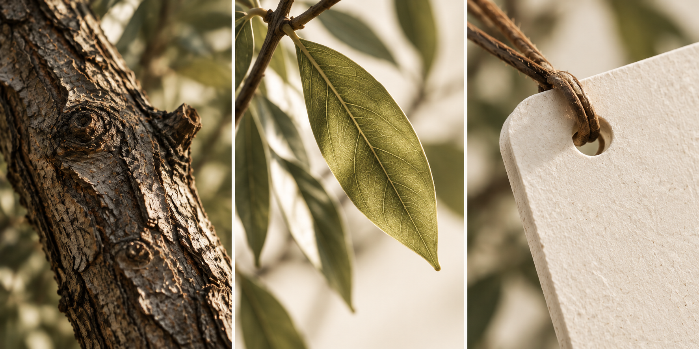
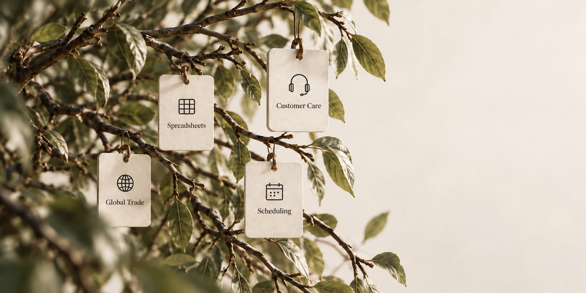
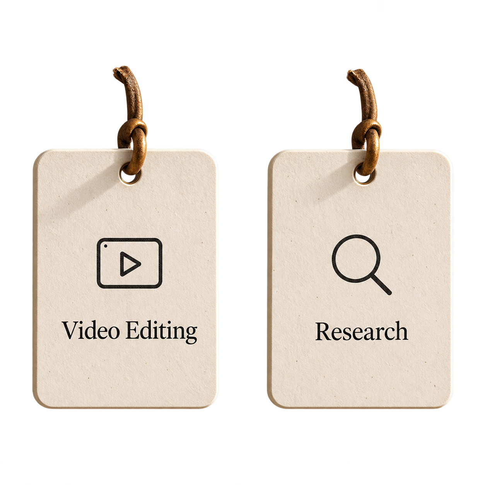

M01 · VISUAL DIRECTION · V1
枝叶 → 多种形态 → 全世界的创意
先把画面，
做到值得留下。
三幕英文视觉母版。
这一轮看构图、材质、文字和空间关系。
这是设计评审稿，下载与社区入口仅呈现视觉状态。
手机视图是重新排布的构图草案，尚未拆分图层。
04 / MATERIAL STUDY
质感来自真实的细节。
树皮、逆光叶片与纸纤维的近景母版。下一阶段按这些细节校准材质、光照和运动幅度。

Warm ivory #F2ECDFOlive mist #A69A74Leaf green #50573DSoft ink #28291F
05 / LAYER FEASIBILITY
分层路线的可行性试样。
去牌底图与独立纸牌用于验证制作路径。纸牌存在白色／黄色 alpha 毛边，仍需修边与逐像素对齐，不能作为正式生产资产。

